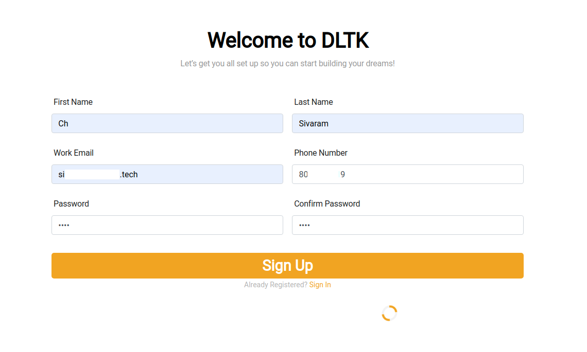
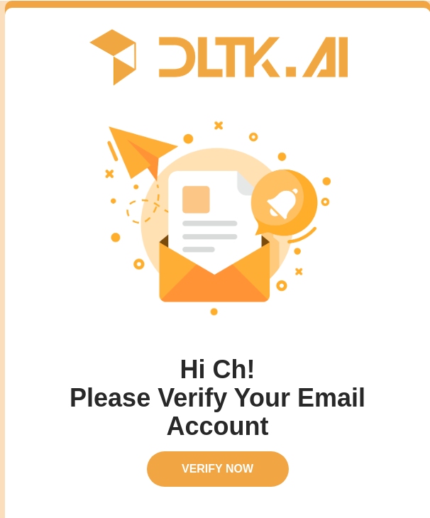
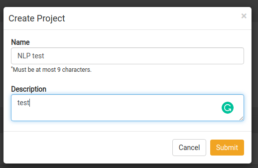
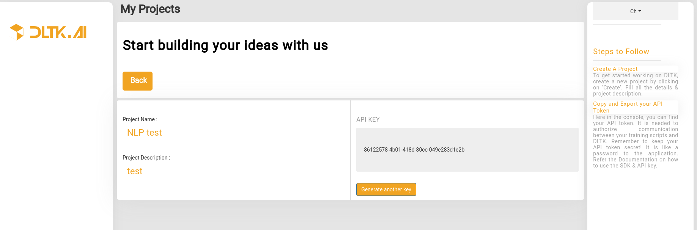

Create user and Generate APIkey¶
Table of Contents
The UI for user creation can be accessed at http://localhost:8082 ,by clicking on Sign Up button on top right, user will be able to view below pages
The UI for user creation can be accessed at http://BASE_SERVICE_IP:8082 ,by clicking on Sign Up button on top right, user will be able to view below pages
Sign Up¶
After filling above details, click on Sign Up button. User will receive an e-mail for verification. On successful verification of email, user will be redirected to Sign In page.
Email Verification¶
User will receive a verification email, as shown below
Create a project¶
After successful login, user will be able to view project list page

Next user needs to create a project, by giving details as shown in below image
Get an API key¶
After successful creation of project, you can go to Project Details Page to get API Key
Use API Key in SDK client initialization¶
Using above generated API key you can use in python SDK client
import dltk_ai
client = dltk_ai.DltkAiClient('86122578-4b01-418d-80cc-049e283d1e2b', base_url='http://localhost:8000')
text = "The product is very easy to use and has got a really good life expectancy."
sentiment_analysis_response = client.sentiment_analysis(text)
print(sentiment_analysis_response.text)
Expected Output:
{
"spacy": {"emotion": "POSITIVE", "scores": {"neg": 0.0, "neu": 0.653, "pos": 0.347, "compound": 0.7496}}
}